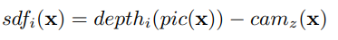
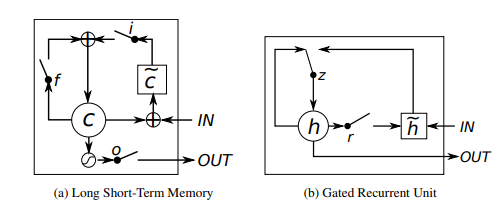

Alexiy Zhandarov
Informatics B.Sc Student
HomePaper Analysis on Real-Time 3D Scene Reconstruction from Monocular Video
May 20, 2022
In this blog post, I will review and analyze the paper NeuralRecon: Real-Time Coherent 3D Reconstruction from Monocular Video published in CVPR 2021 [1] After a brief introduction and going over the relevant terms, I will attempt to explain the algorithm and framework as simply as possible, observe an example, and finally dissect the results and see what it all means for the future of computer vision.
Showcase of the proposed framework.[2]
Introduction
Scene reconstruction is one of the central tasks in 3D computer vision with currently numerous applications. 3D reconstruction has seen a wide range of usage within the medical industry, computer animation and graphics, virual reality(VR) and augmented reality(AR).
Focusing in on the latter for example, to enable realistic and immersive interactions between the desired effects and the surrounding physical environment, the 3D reconstruction has many standards to fulfil; it needs to be accurate, coherent and performed without any noticeable delay.
While camera motion can be tracked accurately with state-of-the-art visual-inertial SLAM systems [3], real-time image-based dense reconstruction remains to be a challenging problem due to low reconstruction quality and high computation demands. Slow and low quality algorithms are naturaly undesirable and can be unreliable when requiring precise results. The proposed framework 'NeuralRecon' attempts to address these issues. Moreover the method proposes a way avoiding the common path of depth-based methods, which uses TSDF fusion and per frame analyzation, and rather predicts it in a local window.

Figure 1. Comparison between depth-based methods and the proposed 3D reconstruction method.
Visual Odometry and SLAM
Visual odometry(VO), one of the founding stones in computer vision, is the process of determining the position and orientation of an actor by analyzing the information provided by its sensors/cameras. Its uses vary immensely from the average drone to the Mars Rovers Exploration[10].
There are many types of VO, we will be focusing on Monocular VO(opposed to Stereo VO) and visual-inertial odometry. Where Monocular VO refers to getting all the input from a single source (a single camera) and visual-inertial odometry to a system empolying an inertial measurement unit (IMU).
Simultaneous localization and mapping (SLAM) as the name suggests involves a computational process of constructing a map of an unknown environment while simultaneously keeping track of the agent's location on said map.
3D reconstruction
Reconstruction refers to the process of capturing the shape and appearance of objects. This allows to determine the object's profile and creating a 3D grid. While many methods are possible to achieve this, the discussion primarily focuses on the Monocular aspect, also called Monocular cues methods. These refer to the usage of one or more images from one viewpoint to create a 3D construction. Exploiting 2D characteristics and defining features(such as shadows and textures) to define the object of a higher dimension.
TSDF Volume
A Truncated Signed Distance Field (TSDF) is a voxel array representing objects within a volume of space in which each voxel is labeled with the distance to the nearest surface. Numerous observations of an object from different perspectives average out noise and errors due to specular highlights and interreflections, producing a smooth continuous surface. The TSDF algorithm can be efficiently parallelized on a general-purpose graphics processor, which allows data from RGB-D cameras to be integrated into the volume in real time. The volume can be converted to a triangular mesh using the Marching Cubes algorithm (explained in "Depth maps and computations") and then handed off to application-specific processes.
[11]A d-dimensional grid of voxels, where the position of each voxel x is defined by its center.
Function 1
sdf, which is the signed distance in between voxel center and nearest object surface in direction of current measurement. Objects in front of itself are positive whereas the area inside the object is defined as negative. i refers to the i -th observation.
pic(x) denotes to the projection of the voxel center onto the depth image. Accordingly depth is the measured depth in between the camera and the nearest object surface point. cam refers to the distance in between the voxel and the camera along the optical axis.
The truncated variant of sdf is denoted by function 2:

Function 2
Each voxel has a weight w atteched to it to asses uncertainty of the corresponding sdf.
Finally, as mentioned prior, multiple viewpoints can be fused together in one TSDF to improve accuracy or added missing surface. This is done by weighted summation.

Function 3 and 4 respectively
Depth maps and computations
Depth maps are a vital instrument in attempting to recreate a model from images. They are clearly useful in a wide range of fields, however tend to set back the process' speed by their high number of computations. Most image-based real-time pipelines adopt the depth map fusion approach[4].
Single-view depth maps are first estimated from each key frame and filtered for consistency and temporal smoothness, and lastely fused into a Truncated Signed Distance Function Volume (TSDF-V).
The reconstructed mesh can be then extracted from the fusion with the marching Cubes Algoorithm [5]. An Algorithm, originally intended for usage in medical imaging, using a divide-and-conquer approach to generate inter-slice connectivity, defining a triangle topology it processes 3D data in-order and calculates verticies using linear interpolation. The detail in images produced from the generated surface models is the result of maintaining the inter-slice connectivity, surface data, and gradient information present in the original 3D data.
This approach suffers as the maps are estimated individually on each key frame. Additionaly each map is estimated in full leading to substantial overlap in the results. Estimating the same surfaces multiple times causes unnecessary computations, and may cause difficulties delivering correct results in certain areas.(see Figure 1)
The paper proposes a method to combat these problems fitting real-time reconstruction from a monocular video. By jointly reconstructing and fusing the 3D geometry directly in the TSDF-V and a given set of monocular images and camera poses from a SLAM system, NeuralRecon can incrementally unproject the image features to form sequentially a 3D feature volume by utilising convolutions to process the feature volume and eventually outputting a sparse TSDF-V which is then gradually refined.
By directly reconstructing the implicit surface, the network is able to learn the local smoothness and global shape prior of natural 3D surfaces. This helps solve one of the issues introduced earlier of predicting separate depth maps.
GRU
To make the jointly produced shape globally consistent with the previous reconstructions a learning based TSDF fusion module using the Gated Recurrent Unit(GRU) is proposed.
While previous works commonly referred to SLTM for modeling, here a decision has been made to opt for a GRU based approach instead. GRU have been shown to be capabele of producing often comparable results with significantly faster computation times thanks to its simplicity. [6,7]
Figure 2. LSTM and GRU graphical illustrations side by side [6].
The GRU fusion makes the current-fragment reconstruction conditioned on the previously reconstructed global volume, hence creating a clear connection between the fragments correcting the problem, which appeared in other designs and yielding a joint reconstruction. This as a result, reconstructs a dense, accurate and globally coherent mesh. For exact calculation formulas see [6], however the main takeaway is, that similarly to the LSTM unit, the GRU has gating units that modulate the flow of information inside the unit, however, without having a separate memory cells. The GRU is forced to expose its full content and can control the flow of information when computing a new candidate.
The experiments go on to report, that the new predicition procedure also removes the redundant computation in depth-based methods, which allows for the use of larger 3D CNNs while maintaining real-time performance.
3D CNN
To validate the system ScanNet and 7-Scenes datasets have been used. Using
Convolution
To validate the system ScanNet and 7-Scenes datasets have been used. Using
Datasets
To validate the system ScanNet and 7-Scenes datasets have been used. Using this data helps achieve state-of-the-art performance on several 3D scene understanding tasks. However in this case it's put into action to validate the results from the experiments I'll mention shortly, measure the correctness and also see how the framework performs when placed in comparison to current state-of-the-art methods.
1. ScanNet
ScanNet is a RGB-D video dataset containing 2.5M views in over a thousand scenes annotated with 3D camera poses, surface reconstructions, and semantic segmentations [8].
2. 7-Scenes
The 7-Scenes dataset is a collection of tracked RGB-D camera frames. It can be used for evaluation of methods for uses such as dense tracking, mapping and more. [9]
The algorithm
...The Experiments
...Results & Discussion
...References
- Jiaming Sun, Yiming Xie1,Linghao Chen, Xiaowei Zhou, Hujun Bao, Zhejiang University, SenseTime Research - NeuralRecon: Real-Time Coherent 3D Reconstruction from Monocular Video
- NeuralRecon: Real-Time Coherent 3D Reconstruction from Monocular Video Presentation Page
- Carlos Campos, Richard Elvira, Juan J. G´omez Rodr´ıguez, Jos´e M. M. Montiel, and Juan D. Tard´os. ORB-SLAM3: An Accurate Open-Source Library for Visual, Visual-Inertial and Multi-Map SLAM. ArXiv, 2020.
- Thomas Schops, Torsten Sattler, Christian Hane, and Marc Pollefeys. 3D Modeling on the Go: Interactive 3D Reconstruction of Large-Scale Scenes on Mobile Devices. In 3DV, 2015.
- William E. Lorensen and Harvey E. Cline. Marching Cubes: A High Resolution 3D Surface Construction Algorithm. SIGGRAPH, 1987
- Junyoung Chung Caglar Gulcehre, Kyung Hyun Cho Universite de Montreal, Yoshua Bengio Universite de Montreal CIFAR Senior Fellow Empirical Evaluation of Gated Recurrent Neural Networks on Sequence Modeling
- Cho, K., Van Merriënboer, B., Bahdanau, D., & Bengio, Y. (2014). On the properties of neural machine translation: encoder-decoder approaches. arXiv preprint arXiv:1409.1259.
- ScanNet: Richly-annotated 3D Reconstructions of Indoor Scenes Angela Dai, Angel X. Chang, Manolis Savva, Maciej Halber, Thomas Funkhouser, Matthias Nießner
- Jamie Shotton, Ben Glocker, Christopher Zach, Shahram Izadi, Antonio Criminisi, and Andrew Fitzgibbon. Scene Coordinate Regression Forests for Camera Relocalization in RGB-D Images. In CVPR, 2013
- Maimone, M.; Cheng, Y.; Matthies, L. (2007). "Two years of Visual Odometry on the Mars Exploration Rovers"
- Werner, Diana & Al-Hamadi, Ayoub & Werner, Philipp. (2014). Truncated Signed Distance Function: Experiments on Voxel Size. 8815. 357-364. 10.1007/978-3-319-11755-3_40.